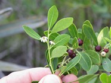

|  | Ilex glabra, also known as Appalachian tea, dye-leaves, evergreen winterberry, gallberry, and inkberry, is a species of evergreen holly native to the coastal plain of eastern North America, from coastal Nova Scotia to Florida and west to Louisiana where it is most commonly found in sandy woods and peripheries of swamps and bogs. Ilex glabra is often found in landscapes of the middle and lower East Coast of the United States. It typically matures to 5–8 ft (1.5–2.4 m) tall, and can spread by root suckers to form colonies. It normally is cultivated as an evergreen shrub in USDA zones 6 to 10. Gallberry nectar is the source of a pleasant honey that is popular in the southern United States. |